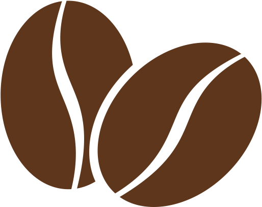

Producent
Hos Café Kaffe sætter vi en stor ære i at levere en kvalitet og service til virksomheder. Kaffe har altid været vores speciale. For at imødekomme vores kunders behov for en lettere hverdag har vi igennem de sidste 10 år udvidet vores sortiment til at omfatte et bredt udvalg indenfor søde sager, te og andre varme drikke og kolde drikke, automatløsninger af forskellig art, engangsartikler, borddækning, rengøringsartikler samt salg af kaffemaskiner

Kaffebønnerne
Vi forhandler kun kaffebønner i højeste kvalitet, så om du er på jagt efter nyristet filter- eller espresso kaffe, så kig forbi vores store udvalg. Hos os har du også mulighed for at købe rå/grønne kaffebønner hvis du synes det er sjovt at riste din kaffe selv.Hos Café Kaffe bestræber vi os på at alt den kaffe vi leverer er absolut nyristet - derfor er der ikke noget af den kaffe der forlader vores produktion, der er mere en 7 dage fra ristedatoen.
Kaffe brygget på kaffemaskine er bedst til de lys- og mellemristede kaffer, men man kan også bruge en mørkristet kaffe eller espresso, det giver så en meget kraftigere smag.Den kværnede kaffe skal være fint malet og du skal bruge ét strøget kaffemål (7 gram) pr. kop.På vandbeholderen på din kaffemaskine kan du se hvor meget vand der skal hældes i. Et 6 tal på vandbeholderen svarer så selvfølgelig til 6 mål kaffe i filteret
Vores informationer
Du er altid velkommen til at skrive eller ringe til os ved at bruge nedenstående informationer.
Vi holder til i Ebeltoft
Adresse: S.A.Jensensvej 4,8400 Ebeltoft
Tlf: 30 60 36 19
Email: CaféKaffe@outlook.com